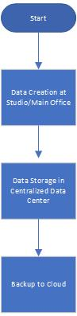
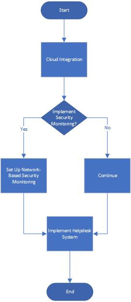

Project Overview
This capstone project focuses on transforming the IT infrastructure of Image Crafters Photography Company. The goal is to transition the company into the digital realm by implementing a centralized data center, integrating cloud solutions, and establishing secure VPN connectivity. Additionally, the project aims to enhance network security through advanced firewalls and regular security audits, ensuring efficient data management and seamless operations between the main office and the studio.
Field Analysis
The Image Crafters Photography Company is poised for a significant digital transformation. As the company expands its footprint, it becomes imperative to stay abreast of the latest trends in information technology, particularly in networking and security. This analysis will delve deeper into these trends, the skills required for IT professionals, and how these align with the company's overarching business objectives.
Documents
-
Cover Letter: This document introduces the project and outlines its goals and objectives, providing a clear rationale for the digital transformation at Image Crafters Photography Company.
-
Field Analysis: A detailed analysis of the company's current IT infrastructure and identification of areas for improvement to align with modern standards in networking and security.
Business Proposal
This business proposal outlines a strategic plan to transition Image Crafters Photography Company into the digital realm. The proposal includes cloud integration, VPN setup, and advanced security measures to enhance operational efficiency and client trust.
Project Scope
This project scope document provides a comprehensive overview of the digital transformation project for Image Crafters Photography Company. It includes project goals, objectives, deliverables, and requirements to ensure successful implementation.
Cost Breakdown
A detailed cost breakdown for the digital transformation project is provided in the attached Excel file. This document includes all the estimated expenses required to successfully complete the project.
Comprehensive Analysis
This comprehensive analysis covers the digital evolution of Image Crafters Photography Company, focusing on hardware, software, and operational considerations. The analysis includes a detailed assessment of current limitations, required changes, and justifications for hardware and software upgrades.
Network Design
This network design specification outlines the architecture and components for Image Crafters Photography Company's digital transformation. The hybrid cloud model combines a private cloud for sensitive operations and a public cloud for scalable storage and disaster recovery.
Network Diagrams
Flowchart:

Network Diagram:

Revised Design
This revised design specification addresses the changes desired by Image Crafters Photography Company. The company aims to shift entirely to cloud-based solutions, enhance security measures, and introduce a helpdesk system for efficient issue resolution.
Updated Diagrams
Flowchart:

Helpdesk Flowchart:

Network Diagram (revised):
.jpg)
Network Diagram 2:

Status Update Report
The "Digital Transformation Project" for Image Crafters Photography Company has made significant progress. This report provides an update on milestones achieved, the remaining timeline, and any budgetary concerns. Recent changes focus on eliminating on-site servers and enhancing network-based security monitoring.
Business Memo
This memo outlines proposed changes to the network design specification to achieve a 15% reduction in the project budget. The changes include transitioning to cloud-based solutions, using open-source software, and optimizing network equipment.
Updated Network Design
This updated network design specification incorporates changes to achieve a 15% reduction in the original budget. The design includes transitioning to a fully cloud-based infrastructure, using cost-effective network equipment, and implementing open-source software where feasible.
Competitor Integration
This proposal outlines the necessary steps and associated costs to integrate the competitor's location into the primary site's network infrastructure. The plan includes establishing high-speed internet connectivity, upgrading outdated equipment, enhancing physical security, and considering the timeline impact.
Revised Network Diagram
This revised network diagram provides an updated view of the network infrastructure for Image Crafters Photography Company. It includes a cloud provider, workstations, a network printer, a CCTV system, routers, and secure cloud connections between the primary site and the competitor's location.
Updated Diagram